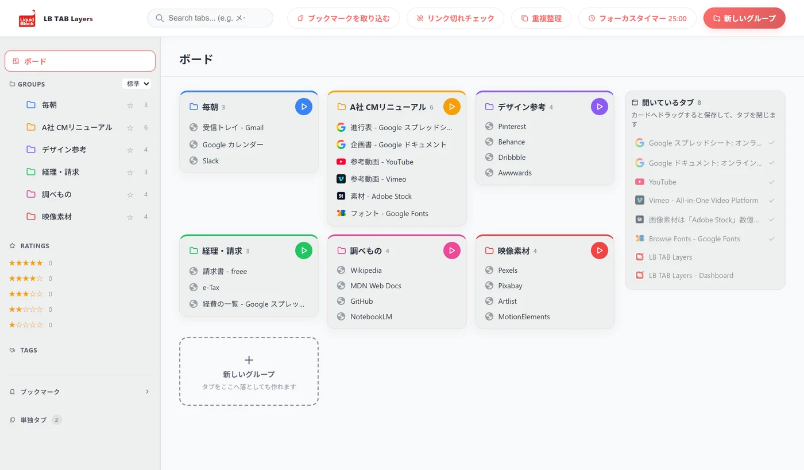

ボードは、ダッシュボードの左上の「ボード」で開きます。すべてのグループがカードで並び、右に「開いているタブ」が出ます。タブをカードへドラッグすると、そのグループに保存して、タブを閉じます。カードの ▶ を押すと、そのグループのタブをまとめて開きます。
📌 ボードは 3.0.3 から使えます。この記事の画面は 3.0.5 のものです。ダッシュボードは PRO の機能ですが、お試しの90日間はすべて使えます。
サイドパネルは、幅がかぎられています。グループが10個を超えると、上から下まで送らないと全体が見えません。「いま、どんな案件を抱えているか」を、一度に見たい。そのための画面がボードです。
ボードの開き方
- サイドパネルの「DB」を押して、ダッシュボードを開きます
- 左上の「ボード」を押します
ダッシュボードを開いたときに、最初に出る画面でもあります。
カードでできること
| やりたいこと | 操作 |
|---|---|
| そのグループのタブを、まとめて開く | カードの右上の ▶ |
| グループの中をくわしく見る | カードの名前を押す |
| 開いているタブを、グループにしまう | 右の「開いているタブ」から、カードへドラッグ |
| 新しいグループを作る | 「＋ 新しいグループ」を押す。タブを落としても作れます |
| いまのタブを、まとめてしまう | 「まとめて新しいグループに保存」 |
カードの上の帯の色は、グループの色です。色を決めておくと、名前を読まなくても、どの案件かが分かります。
開いているタブを、ドラッグでしまう
右の列には、いま開いているタブが並びます。タブをつかんで、カードの上で離すと、そのグループに保存して、タブを閉じます。保存先は Chrome のブックマークなので、閉じても消えません。
- もうグループに入っているタブは、薄い色で、チェックが付きます。まだしまっていないタブが、ひと目で分かります
- 「まとめて新しいグループに保存」には、まだ入っていないタブの数が出ます。保存されるのは、その分だけです
- 右の列の数は、サイドパネルの「タブ」の数と同じです
ボードと、ほかの表示の使い分け
- ボード：案件の全体を見わたす。タブをしまう
- グループの画面：1つの案件の中を、サムネイルつきで見る。くわしくは サムネイル付きライブラリ表示
- サイドパネル：作業をしながら、横に置いて使う
ダッシュボードの全体は、【機能ガイド】ダッシュボードにまとめています。
【実体験】数が合わない、と自分で気づいた
ボードの右の「開いているタブ」は、はじめ、グループに入っていないタブだけを並べていました。自分たちで使っていて、サイドパネルの「タブ」の数と合わないことに気づきました。同じものを見ているのに数が違うと、どちらを信じればよいか分かりません。3.0.5 で、開いているタブをすべて並べ、しまってあるものは薄くする形に直しています。あわせて、操作のたびに画面がちらつく問題も直しました。見わたすための画面が、落ち着かないのでは意味がないと考えたためです。
知っておきたいこと
- カードに出るのは、はじめの数件です。残りは「ほか ○ 件」と出ます。名前を押すと、すべて見られます
- ドラッグで保存すると、タブは閉じます。開いたまま保存したいときは、サイドパネルの「現在のタブを追加」を使います
- プラン：ダッシュボードは PRO の機能です。お試しの90日間はすべて使えます
🎬 ボードのほかにも、いろいろできます。パネルを開く、保存したタブを開く、閉じたタブを履歴から戻す、ページにひもづけたメモ、ピンバーまで。ブラウザとパネルの動きをそのまま見られる 操作ガイド（動く画面で見る10の操作） にまとめています。入れたばかりの方は クイックチュートリアル（5分） からどうぞ。
よくある質問
Q. ボードは、どこから開きますか？
サイドパネルの「DB」でダッシュボードを開き、左上の「ボード」を押します。ダッシュボードを開いたときに、最初に出る画面でもあります。
Q. タブをカードへドラッグすると、どうなりますか？
そのグループに保存して、タブを閉じます。保存先は Chrome のブックマークなので、閉じても消えません。
Q. ボードは無料で使えますか？
ダッシュボードは PRO の機能です。インストールから90日間は、すべての機能を無料で試せます。
Q. グループの数に上限はありますか？
PRO では上限がありません。カードは画面の幅に合わせて折り返して並びます。
▶ 実際の操作を動画で見る
サイドバーで、ブックマークとタブをいっしょに管理する様子です。